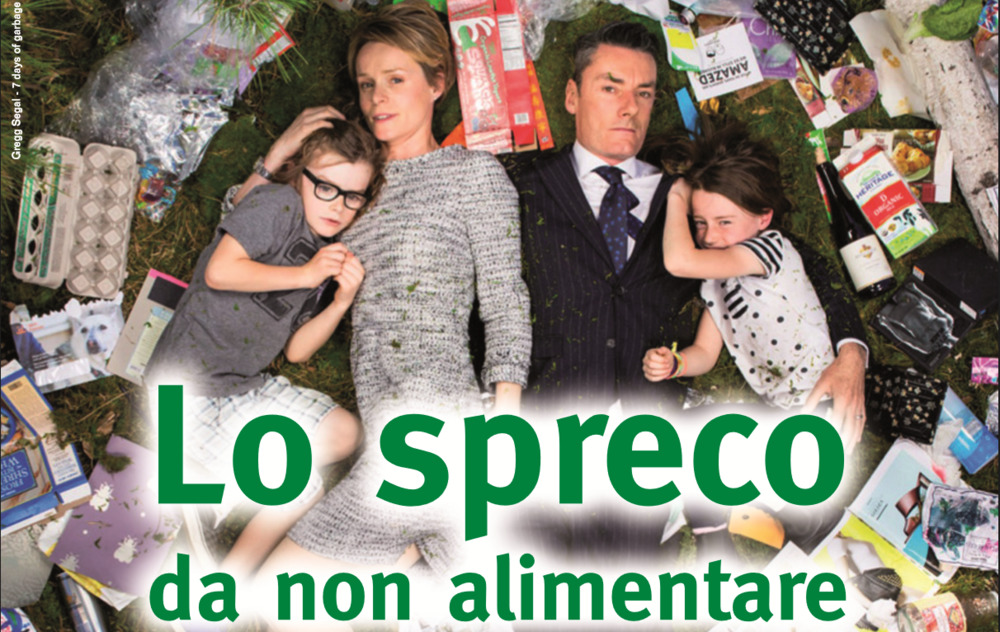

La mostra fotografica “7 days of
garbage” sugli sprechi,si terrà presso il
Museo delle Mura da sabato 26 Maggio fino a sabato 9 Giugno.
L'autore
Gregg Segal, fotografo californiano, ha chiesto a varie persone, singoli, famiglie, amici e sconosciuti di raccogliere
tutta la spazzatura che producono in una settimana e di posare con i rifiuti per un progetto fotografico. Sono scatti che rendono evidente
la quantità materiale di rifiuti che produciamo e innescano riflessioni che speriamo porti ad una maggiore attenzione e affezione nei
confronti del pianeta che ci accoglie.
Proposta
La mostra può essere uno stimolo per diverse riflessioni ed attività, compresi percorsi didattici su tematiche come gli stili di vita,
gli sprechi alimentari e la gestione dei rifiuti.
Argomenti all'interno della mostra.
1. selfie-trash: la mostra si compone di fotografie di persone nella loro spazzatura settimanale. L'installazione che si creerà oltre ad
una valenza comunicativa ed artistica può essere associata ad attività di contestualizzazione locale sui temi sopracitati.
2. Incontro con esperti del settore: in relazione al contesto è possibile chiamare relatori per parlare di stili di consumo, sprechi alimentari,
sostenibilità.
3. Laboratori di riciclo creativo: partendo da una frazione merceologica è possibile lavorare con fantasia e manualità sul tema Nutrire il Pianeta.
4. Cittadinanza attiva: usciamo a pulire la scuola, il quartiere, la via...
5. Iniziative di supporto - alle attività di cui sopra è possibile aggiungere iniziative come: visione di video, realizzazione
di ricerche sul web, realizzazione di prodotti grafici.
L'iniziativa è gratuita per scuole, enti locali ed associazioni. Gli enti coinvolti forniscono tutto il supporto tecnicamente
possibile per la buona riuscita del percorso scelto.